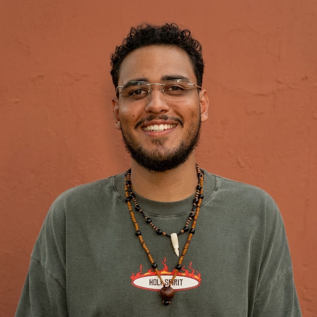
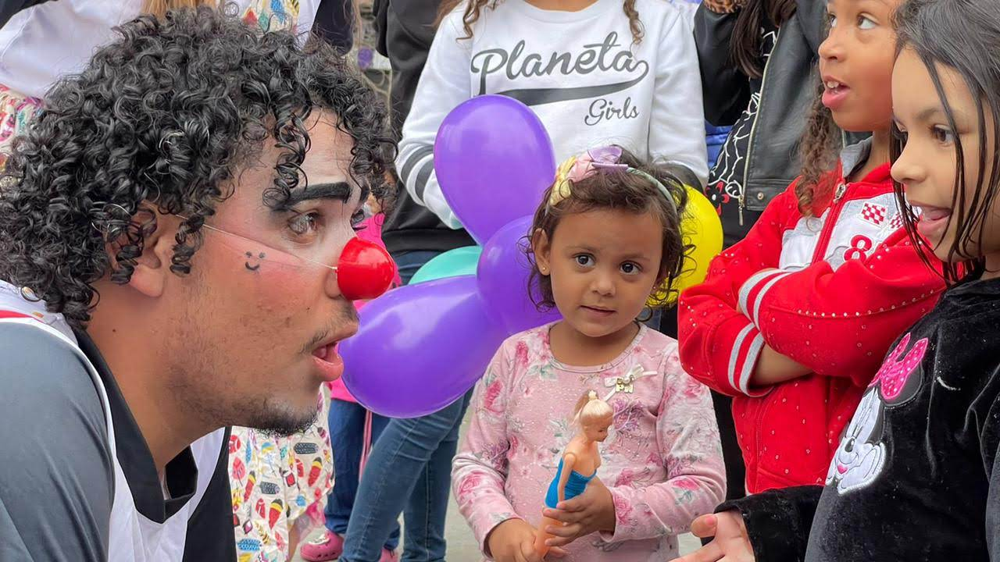
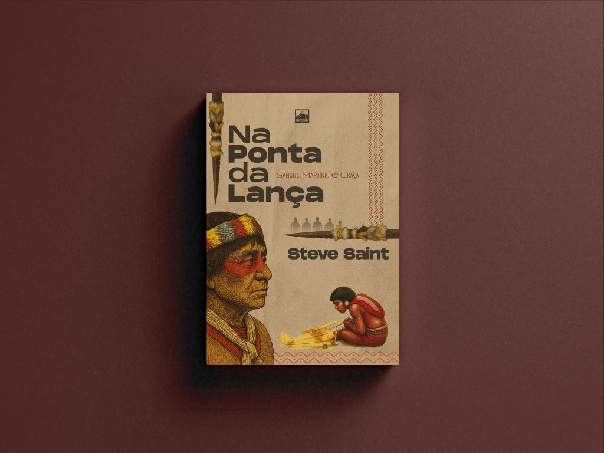
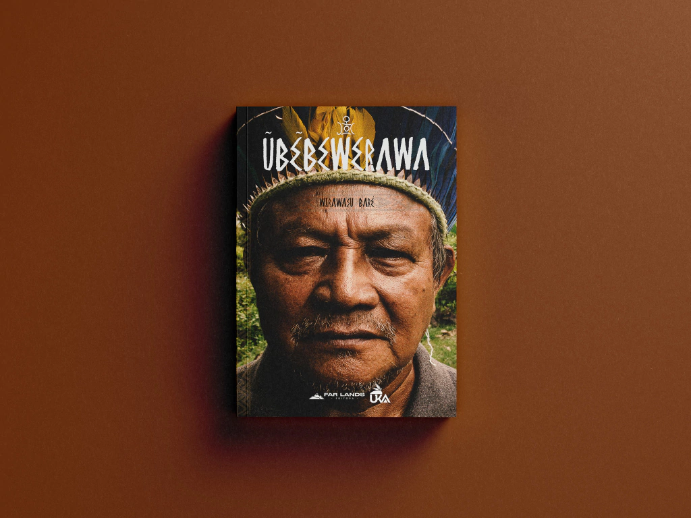
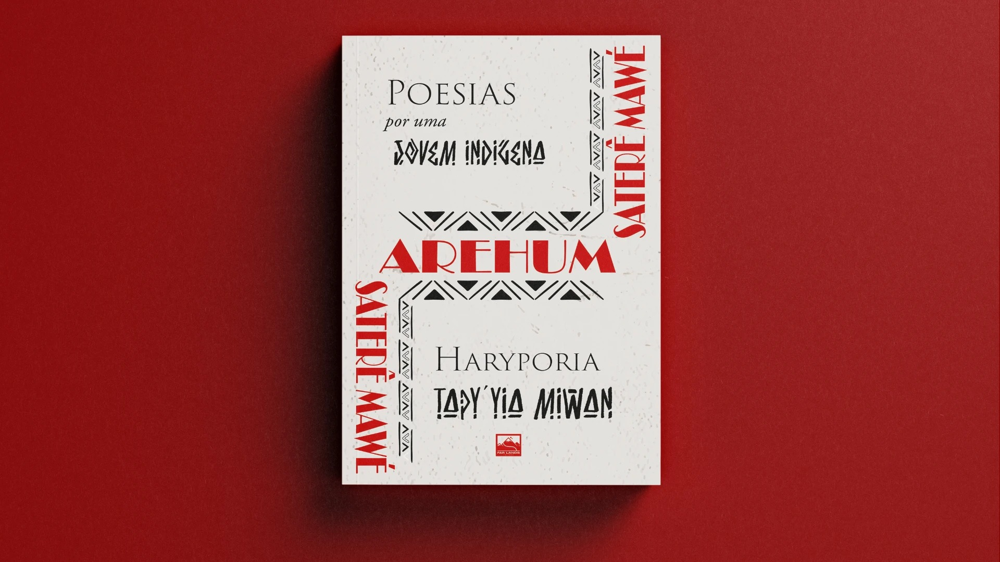
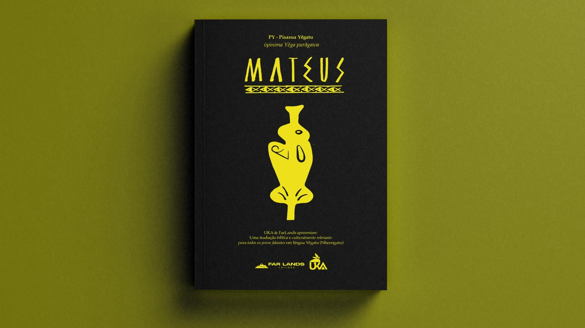

NA MISSÃO
Ezequiel Rocha
Uma jornada dedicada a traduzir o amor do Criador aos povos esquecidos.

Ezequiel
Rocha

- → Pode me chamar de Zeck, Zeca...
- → Missionário por Vocação
- → Igreja local: @raravgp
- → Formado em Produção Multimídia
- → Graduando em Serviço Social
Fui alcançado por Jesus de forma inesperada, ouvindo histórias de avivamento em um momento em que sequer frequentava a igreja. Essa experiência me transformou e trouxe uma clareza imediata: eu precisava anunciar o amor de Deus a todos.
A fé não me permitiu ficar parado. Fui para as ruas, praças, presídios, vários estados e até fronteiras. Entendi que meu coração batia pela mesma causa de Deus: alcançar aqueles que a sociedade insiste em esquecer. Compreendi que a cruz não é apenas um lugar de perdão, mas o ponto de partida de um amor que se move em direção à dor do outro.
Os Caminhos Percorridos
A minha pequena caminhada hoje carrega:

Sou um missionário por vocação. Minha jornada de obediência já me levou a vários estados e até países. Hoje, encaro minha formação acadêmica como uma arma para a missão. Minha formação em Produção Multimídia e a minha graduação em Serviço Social têm um único objetivo: expandir o Reino. Uso essas ferramentas de forma intencional para dar voz aos esquecidos, combater a injustiça e levar esperança de maneira prática e transformadora.
O que eu já fiz como um missionário
Paraguai
No Paraguai, trabalhei no fortalecimento da comunidade cristã local e no serviço direto a crianças e populações em situação de vulnerabilidade. Foi nesse cenário que o meu chamado se tornou inegável: tive a certeza absoluta de que minha vida seria dedicada a alcançar os esquecidos. Essa missão foi o 'sim' que abriu caminho para toda a minha jornada.
Palhaçaria
Através do palhaço 'Zeca', encontrei uma ferramenta poderosa para comunicar a esperança de forma acessível e leve. Já levei a palhaçaria para as ruas, hospitais e eventos, atuando tanto no Brasil quanto em outros países. O principal objetivo do Zeca é quebrar barreiras por meio da arte, levando uma mensagem contextualizada que toca o coração não apenas das crianças, mas também dos adultos que precisam de alegria e acolhimento.
Projeto Agreste
Atuei diretamente em um projeto de justiça e transformação social em um bairro vulnerável da nossa cidade. Em parceria com uma escolinha de futebol, atendemos 150 crianças e adolescentes. Nosso trabalho unia o cuidado físico e espiritual: oferecíamos café da manhã e devocionais, mas também fomos além das quatro paredes. Realizamos cultos, bazares solidários, evangelismo nas ruas e visitas domiciliares, apresentando o Evangelho de forma prática às famílias.
Sertão do Seridó
No Sertão do Seridó, visitei uma pequena comunidade rural de aproximadamente 70 pessoas para apoiar a plantação de uma igreja iniciada por um amigo missionário. Nosso foco foi o evangelismo relacional: sentamos com as famílias, oramos juntos e construímos laços verdadeiros. O marco dessa ação foi a entrega das 'Bíblias de Taipa' — uma edição traduzida e adaptada para a linguagem sertaneja.
Plantação Indígena
Atuei intensamente na região amazônica, tanto no lado brasileiro quanto na fronteira guianense, junto com a FarLads. Nosso trabalho foi focado na plantação e no fortalecimento de igrejas em comunidades indígenas. Por se tratarem de povos ainda pouco alcançados, atuei na construção de fundamentos através de estudos bíblicos, na realização de cultos e no trabalho direto com crianças. O objetivo central é sempre traduzir o amor de Deus, entregando um Evangelho que seja fiel às Escrituras, mas profundamente respeitoso e culturalmente relevante para a realidade de cada povo.
Ilha do Marajó
Através da FarLands em parceria com a Missio Dei Marajó, atuei na linha de frente no serviço aos alunos da escola local. Fomos sujar os pés na realidade nua e crua. Caminhei por lixões, atuei em casas de acolhimento e realizei evangelismo de porta em porta. Foi um tempo de abraçar as margens da sociedade, provando que o amor que ensinamos só faz sentido quando desce às trincheiras mais profundas do esquecimento humano.
O que eu estou fazendo agora?
A caminhada da fé sempre nos pede para abraçar o desconhecido, mas Deus tem me dado direções muito claras para esta nova estação. Hoje, sirvo como missionário pela organização FarLands, o solo onde minha vocação encontra a estrutura necessária para se expandir e dar frutos concretos.
1. INTEGRAÇÃO À IGREJA CASEIRA
A igreja do Novo Testamento cresceu e se fortaleceu nos lares. A dinâmica das cartas paulinas frequentemente saúda "a igreja que se reúne na casa de alguém" (como Priscila e Áquila, ou Filemom). A vida comunitária em pequena escala gera o ambiente perfeito para a prestação de contas, o pastoreio mútuo e o exercício genuíno dos "uns aos outros".
Acreditamos que a missão nasce e se sustenta na comunidade. Nossos missionários carecem dessa vivência no dia a dia, do pastoreio mútuo e o discipulado orgânico por meio da dinâmica e da vida de uma Igreja Caseira.
2. CONSOLIDAÇÃO DE PRINCÍPIOS MISSIONÁRIOS
O movimento apostólico na Igreja Primitiva não enviava ninguém ao campo sem antes consolidar princípios de vida e ministério. Ele instrui Timóteo a "transmitir a homens fiéis, que sejam idôneos para também ensinarem a outros". Jesus passou três anos consolidando o DNA do Reino no coração de Seus discípulos antes de enviá-los de forma definitiva no Pentecostes. O tempo de base é extremamente importante para construção de uma visão bíblica e saudável para o envio aos povos transculturais não alcançados.
3. PRODUÇÃO LITERÁRIA EM MISSIOLOGIA TRANSCULTURAL
"Escreve a visão e torna-a bem legível sobre tábuas, para que a possa ler o que correndo passa" (Hc 2:2). A produção literária tem o poder de registrar, perenizar e multiplicar o conhecimento. Lucas escreveu seu Evangelho e o livro de Atos de forma ordenada para que o conhecimento da missão fosse consolidado. Escrever livros em missiologia é registrar a história de Deus entre as nações e equipar a igreja que caminha.
4. PRINCÍPIOS DA TRADUÇÃO BÍBLICA
II. KHÉOUL GUYANE
III. MBYÁ GUARANI
No Pentecostes, o Espírito Santo não exigiu que a multidão aprendesse o aramaico ou o grego; em vez disso, as maravilhas de Deus foram ouvidas "cada um na sua própria língua materna". O cumprimento da Grande Comissão exige que toda "nação, tribo, povo e língua" adore diante do trono. Dedicar-se à tradução é o ato mais profundo de contextualização do Evangelho: dar a um povo o direito de ouvir a Deus na língua do seu coração.
5. SERVIR A IGREJA LOCAL COM UMA VISÃO MISSIONÁRIA
Os ministérios e vocações (como os missionários e evangelistas) foram dados por Deus para "o aperfeiçoamento dos santos, para a obra do ministério, para edificação do corpo de Cristo". A base missionária não é um fim em si mesma, ela serve à Igreja. Assim como Paulo ansiava ver os romanos para "repartir algum dom espiritual, a fim de que fossem fortalecidos", a FarLands em Campinas servirá para encorajar e avivar a igreja local.
6. MOBILIZAR IMERSÕES DE CARÁTER MISSIOLÓGICO
Os apóstolos sempre passava pelas igrejas locais para despertá-las, coletar ofertas para os campos e pedir que elas o "encaminhassem na sua viagem" (mobilização e parceria).
Para as igrejas brasileiras, uma imersão transcultural faz com que empreendimentos missionários deixa de ser um "projeto de curto prazo" e passa a ser uma escola de maturidade. Ela transforma uma igreja que apenas envia recursos em uma comunidade que sabe habitar e respeitar, gerando um impacto de longo prazo nos lugares onde ainda não há presença de igrejas e missionários.

MISSÃO FARLANDS
O evangelho de forma culturalmente relevante
A Missiologia da FarLands propõe uma ruptura radical com os modelos missionários colonialistas e paternalistas históricos. Nossa abordagem fundamenta-se em uma missiologia encarnacional, ecológica, contextual, linguística e antropológica, cujo objetivo final não é a ocidentalização do ser transcultural alcançado para que ele se torne cristão, mas sim o florescimento de uma igreja genuinamente bíblica e autóctone, nossa metodologia se dá na proclamação de um evangelho bíblico e culturalmente relevante, para que todos os povos exerçam o seu sacerdócio cultural ao Criador de tudo e todos.
Editorial FarLands
PRODUÇÃO EVANGELÍSTICA & DEVOCIONAL A IGREJA BRASILEIRA
Escrita Indígena
A tradução da Bíblia é o primeiro passo, mas se não ensinarmos o povo a ler e se não deixarmos livros — uma literatura teológica robusta escrita ou traduzida para o contexto deles —, nós os condenamos a uma fé superficial.
O livro é o professor que permanece quando o missionário vai embora. Deixar livros nas mãos de um povo é garantir que eles tenham a chave para a própria reforma e crescimento, sem depender perpetuamente do ocidente."
Oralidade Indígena
Quando o missionário vai embora de um povo letrado, o registro em áudio é o que liberta um povo de tradição oral da dependência estrangeira. Pregar sermões passageiros não basta; sem um registro durável — um "livro falado" —, a mensagem se perde no tempo.
Quando gravamos a Bíblia, as histórias e os cânticos na língua e no ritmo local, passamos a autonomia para os próprios indígenas. O áudio permite que o ancião ouça a verdade repetidamente em seu próprio formato de aprendizado, garantindo que a igreja nativa cresça guiada pelo Espírito Santo, sem precisar depender para sempre de um mediador estrangeiro.
LIVROS:

Na Ponta da Lança

Ūbēbēwerawa

Haryporia Tapy’yia Miwan

Ūpinima Yēga Purãgawa Mateus
Escola de Transculturalidade & Missiologia da FarLands
A Escola de Missiologia da FarLands propõe uma ruptura radical com os modelos missionários colonialistas, institucionais e paternalistas históricos. Nossa visão e abordagem fundamenta-se em uma missiologia encarnacional, linguística, contextual e antropológica, cujo objetivo final não é a "urbanização" ou a "ocidentalização" desses povos para que se tornem cristãos, mas sim o florescimento de expressões eclesiais genuinamente autóctones entre os 4 povos étnicos menos alcançados do Brasil: Indígenas Ciganos, Quilombolas e Sertanejos.
Nossa metologia se da na proclamação de um evangelho bíblico e culturalmente relevante, para que todos os povos exerçam o seu sacerdócio cultural ao Criador de tudo e todos.
Iniciativa Janela Verde
Conectar o Corpo de Cristo onde a Igreja está, para construir o Corpo de Cristo onde a Igreja não está.
A Iniciativa Janela Verde é um movimento missionário em direção aos povos das Florestas Tropicais.
O conceito de Janela Verde refere-se à zona das florestas tropicais do mundo, localizada entre as latitudes 23,5° Norte e 23,5° Sul. Esta área abriga a maior biodiversidade do planeta e, simultaneamente, um dos maiores desafios missionários da atualidade: mais de 2.200 grupos étnicos tribais que ainda não foram alcançados pelo evangelho.
Para alcançar uma missão biblicamente saudável, a iniciativa utiliza os pilares:
- Envolver (Engage): Investir tempo e recursos para viver entre eles.
- Capacitar (Empower): Colocar o líder indígena no "assento do motorista".
- Encorajar (Encourage): Caminhar juntos em unidade, superando o individualismo no campo.
Base Missionária FarLands
O Propósito da Base
O projeto da Base FarLands Campinas fundamenta-se no modelo apostólico do Novo Testamento: uma base fundamentada na comunhão diária (Igreja Caseira), dedicada ao ensino sólido (Consolidação), empenhada em registrar e compartilhar a sabedoria (Produção Literária), focada em levar o Evangelho de forma compreensível aos povos isolados (Tradução), comprometida com o fortalecimento dos irmãos (Serviço à Igreja) e catalisadora do envio a povos não alcançados. (Mobilização).
Um convite para a Parceria.
A missão exige dedicação integral, e para manter os pés no solo, minha meta imediata é formar uma aliança com 25 parceiros que possam ofertar R$ 50 mensais (o valor é totalmente livre, pode ser mais ou menos, o que importa é estarmos juntos).
R$ 50 Mensais
Para onde vai esse recurso?
Existem lugares que a esperança ainda não alcançou.
Hoje, esse recurso sustenta um trabalho que já chega a mais de 2.000 mulheres em situação de rua, quase 200 homens dentro do presídio de Itatinga e mais de 400 indígenas da Unicamp, de 96 etnias diferentes.
Você não está apenas enviando uma oferta. Você está traduzindo a Palavra, formando missionários e construindo dignidade onde a esperança ainda não pisou.
Como sou missionário em tempo integral e essa missão faz parte da igreja, preciso de 25 parceiros dispostos a ofertar R$ 50 por mês. Se esse chamado tocou você, seja um deles agora.

A nossa troca
(O que você recebe)
Nesta aliança, a missão é 100% compartilhada. Além de saber que sua oferta se transforma em pão e Evangelho no campo, você caminha comigo e recebe:
Ou escaneie o QR Code: